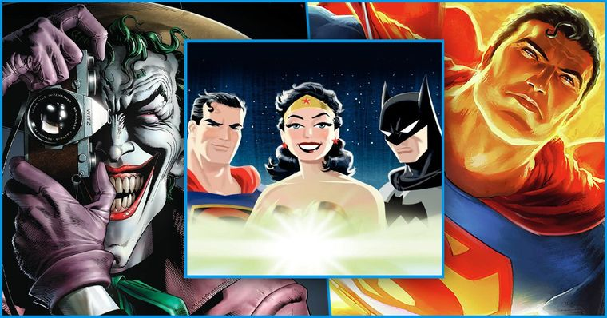
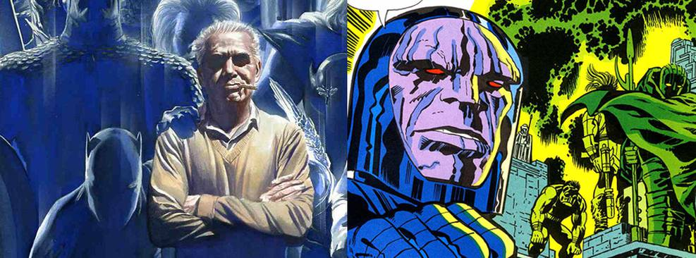
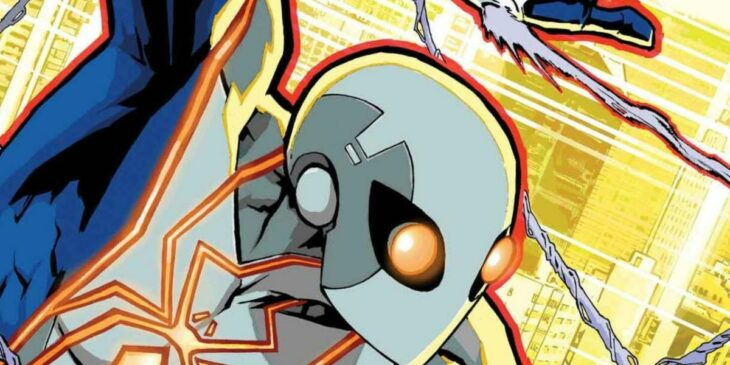
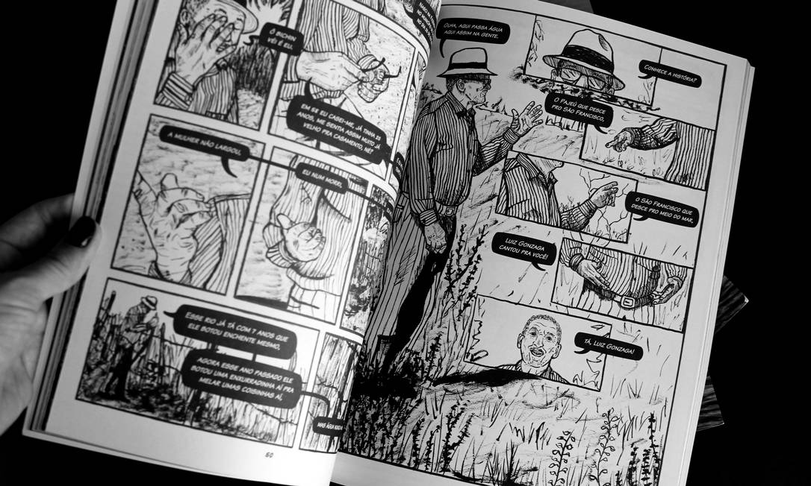
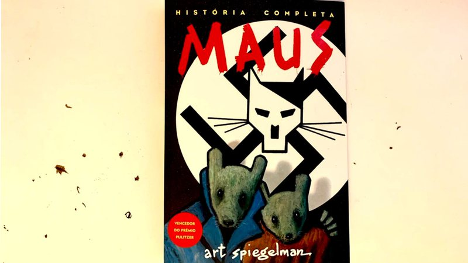
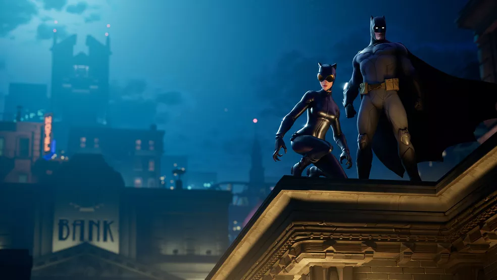

Login
/
Cadastre-se
Home
Quadrinhos
Contato
Quem somos

5 piores e os 5 melhores filmes animados da
dc comics

Liga da Justiça | Como uma briga na
Marvel levou à criação do Darkseid na DC

Homem-Aranha ganha novo traje nos quadrinhos

Como a presença feminina tem mudado a produção de quadrinhos no Brasil, com narrativas cada vez mais plurais

Cicatrizes do holocausto em quadrinhos: 5 motivos para ler 'maus'

Fortnite terá skins exclusivas de nova série de quadrinhos do Batman
Esse site foi feito para fins educacionais, não tendo qualquer objetivo finaceiro ou de posse de propriedade intelectual